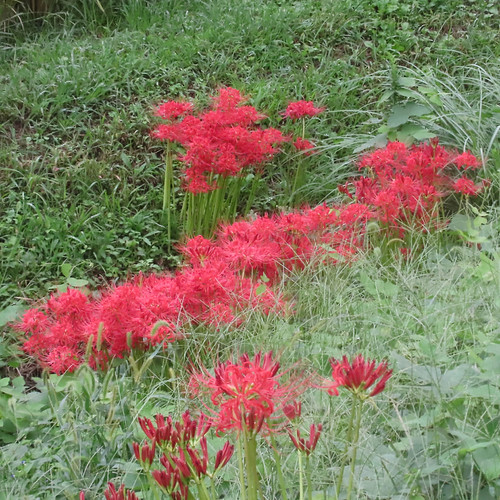

彼岸花のある風景

秋分の日なのでお彼岸ネタなどを。
この時期になるとよく見かける彼岸花。 私の住んでいるところは田舎なので，田んぼのあぜ道などに咲いているのをよく見かける。 以下は彼岸の入り（2026-09-20）に温泉に行った帰りに田んぼの脇に咲いていたのを撮ったもの。

ふと「なんで田んぼのあぜ道などに彼岸花が植わってるんだ？」と思い Kagi Assistant に訊きつつ調べてみた。
まずは名前から。
ヒガンバナは、ふしぎに彼岸のころになると、約束したように花を開く性質がある。このため、ヒガンバナという。別名の曼珠沙華も彼岸（仏教でいう極楽浄土のこと）と関係があって、昔お釈迦様の時代のインドで「天上の花」を意味したそうである。花の時期になると、地面から、割りばしより少し太い葉のない茎だけがスルスルとのびて、その先にいくつもの赤い花を横向きにつける。
[…]
学名のLycorisは、ギリシャ神話の海の女神の名前からつけられた。ヒガンバナの花の美しさを女神の美しさにたとえたのであろう。radiataは、「放射状の」という意味で、花びらとがく片が放射状につくことを表している。
ほほう。 彼岸花と曼珠沙華は同じものを指してたのか。 東京薬科大学にあるページの解説によると
原産地は中国で、日本には有史以前に渡来したと考えられています1。秋の彼岸の頃に咲くため「彼岸花」とよばれますが、別名の「曼珠沙華（まんじゅしゃげ）」は、古代インドのサンスクリット語manjusaka（赤い）に由来します2。曼珠沙華は仏教経典に登場する「天界の花」の一つで、「赤い花が空から降りそそぐ」吉祥のしるしとされます。ただし、ヒガンバナはインドには自生していないので、経典の「赤い花」そのものではないのでしょう。曼珠沙華がヒガンバナを指すようになったのは、後のことだと思われます。
とのこと。
で，なんで田んぼのあぜ道等に彼岸花が植えられているのかという話だが Kagi Assistant は理由を3つ挙げてくれた。
- モグラやネズミによる被害を防ぐため
- あぜを補強し，雑草を抑えるため
- 稲作の時期と開花時期が重なり，目立つため
彼岸花の鱗茎1 に毒があるのはよく知られている。
ヒガンバナの鱗茎にはリコリンなどの多様なアルカロイドが含まれ、強い毒性があります。誤って食べると吐き気や腹痛を伴う下痢を起こし、重い場合は中枢神経の麻痺によって死に至ることもあります。この毒性はネズミを寄せつけません。また、餌のミミズがいなくなるので、モグラも寄りつきません。そのため、ヒガンバナは、畔や堤防が小動物に掘り返されて崩れるのを防ぐ「動物避け」になります。墓地では、土葬した遺体が動物によって荒らされるのを防ぐために植えられたとされます。
ただ，彼岸花が本当にモグラ避けになっているのかについては，はっきりした根拠があるわけではないらしい。 民間伝承というやつやね。
2番目については，彼岸花には周囲の植物の生育を抑える作用（アレロパシー）があるらしい。 故にあぜの雑草管理（生えないわけではない）に用いられているとのこと。 また鱗茎（球根）で増えるので，これがあぜの補強にもなっているわけやね。
3番目はちょっと何を言っているか分からなかった。 目立つからなんやねん（笑）
毒のある彼岸花の球根だが，非常食として利用されることもあったらしい。
一方で、鱗茎は毒を抜けばデンプン源となります。毒は水溶性のため、すりつぶして水にさらすことで抜くことができ、飢饉の際には非常食とされました。人の暮らしのそばに植えられたことには、こうした備蓄食料としての役割もありました。
まじかぁ。 ホンマ，日本人って何でも食うよな。 よい子は真似しないでね。
というわけで，日本人は意地汚いというお話でした（違う）
-
地下茎に養分を蓄えた肉厚の葉（鱗片葉）が多数集まって球形や卵型になったもの。チューリップの球根や玉ねぎなどを連想してもらうといいだろう。 ↩︎